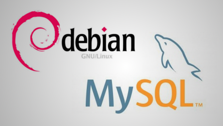

Install MySQL 5.5 on Debian Wheezy 7

This is just a quick note, as I struggled with installing not MySQL 5.6 but 5.5 on Debian Wheezy.
First, I already had MySQL 5.6 installed but no data was stored there, so backup wasn't necessary
$ sudo apt-get purge mysql*
$ sudo apt-get autoremove
$ sudo rm -r /var/lib/mysql/ /var/log/mysq* /tmp/mysql*
Normally, this should do the trick
sudo apt-get install mysql-server-5.5 mysql-client-5.5 mytop
But in my case, mylsq-server-5.5 selected mysql-common (5.6) as dependency, so I had to do this in order to get the right versions
$ sudo apt-get install mysql-server-5.5 mysql-client-5.5 mysql-common=5.5.40-0+wheezy1 libdbd-mysql-perl libmysqlclient18=5.5.40-0+wheezy1 mytop
$ sudo mysql_upgrade
The packages mysql-common and libmysqlclient18 have to be pinned on a version older than 5.6. If you don't know the version, you can check for available versions with 'apt-cache policy packagename'. Just pin the packages to the required version until everything installs correctly. You can test your settings by running apt-get in dry-mode (append -s).
Hope this helps!